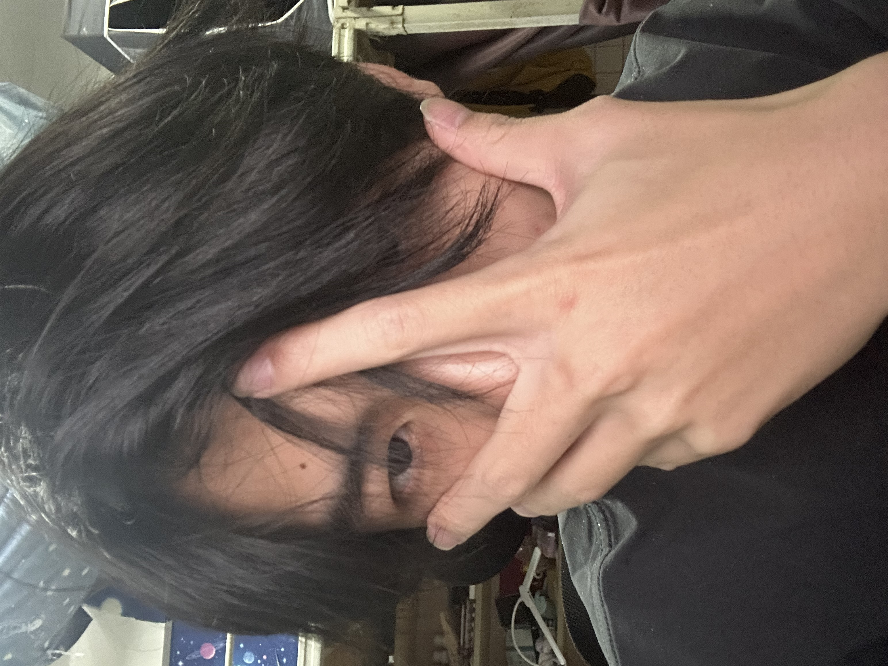

个人主页
一个干净、轻量、适合 GitHub Pages 托管的个人网站。
Website个人网站
这里是一个简洁的个人主页，用来记录我的学习、项目、研究兴趣和最近在做的事情。
A compact personal archive for learning, experiments, research notes, and small digital works.

About
I care about durable craft, readable systems, and the quiet accumulation of ideas.
Work
Selected directions, prototypes, and notes that can grow into a fuller portfolio.
一个干净、轻量、适合 GitHub Pages 托管的个人网站。
Website整理课程、阅读、实验和技术实践中的关键收获。
Notes用于展示之后完成的应用、研究、设计或开源项目。
PortfolioContact
Open to conversations about web interfaces, creative tools, and long-form learning.
如果你想联系我，可以通过下面的邮箱发送邮件。